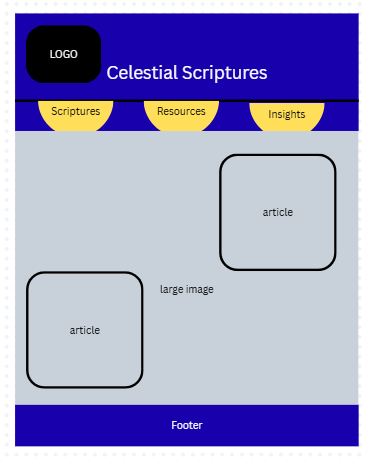
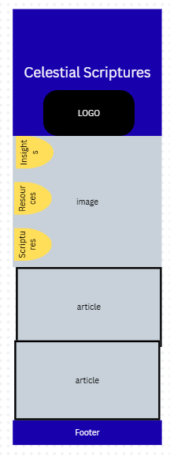

Site Name
Celestial Scriptures
This name represents a orginization focused on studying scripture of the Church of Jesus Christ of Latter-day Saints.
celestialscriptures.orgSite Purpose
To provide ways and best practices to study the scriptures. Also to provide a place for study insights to be shared. Also to link to church websites and resources.
Scenarios
- How can I better my study of the scriptures?
- What resources are there to study the scriptures?
- I'd love to find a place to share insights I am learning from the scriptures.
Color Schema
- navy - used on heading background
- white - used on heading text
- black - used for other text and borders
- gold - used as an accent color
Typography
I will use Roboto throughout the whole page using differing weights.
Wireframes
Desktop View

Mobile View
